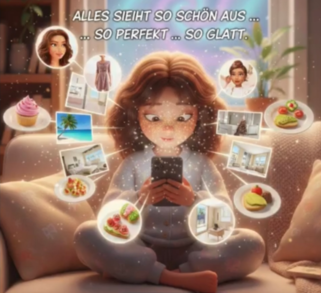
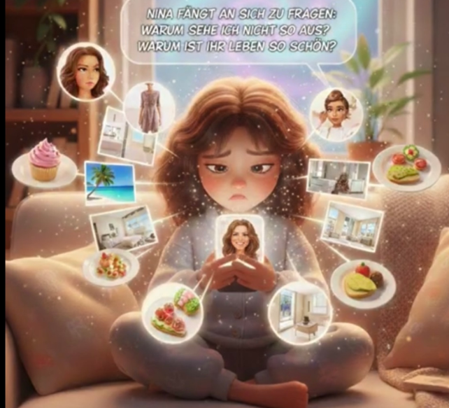
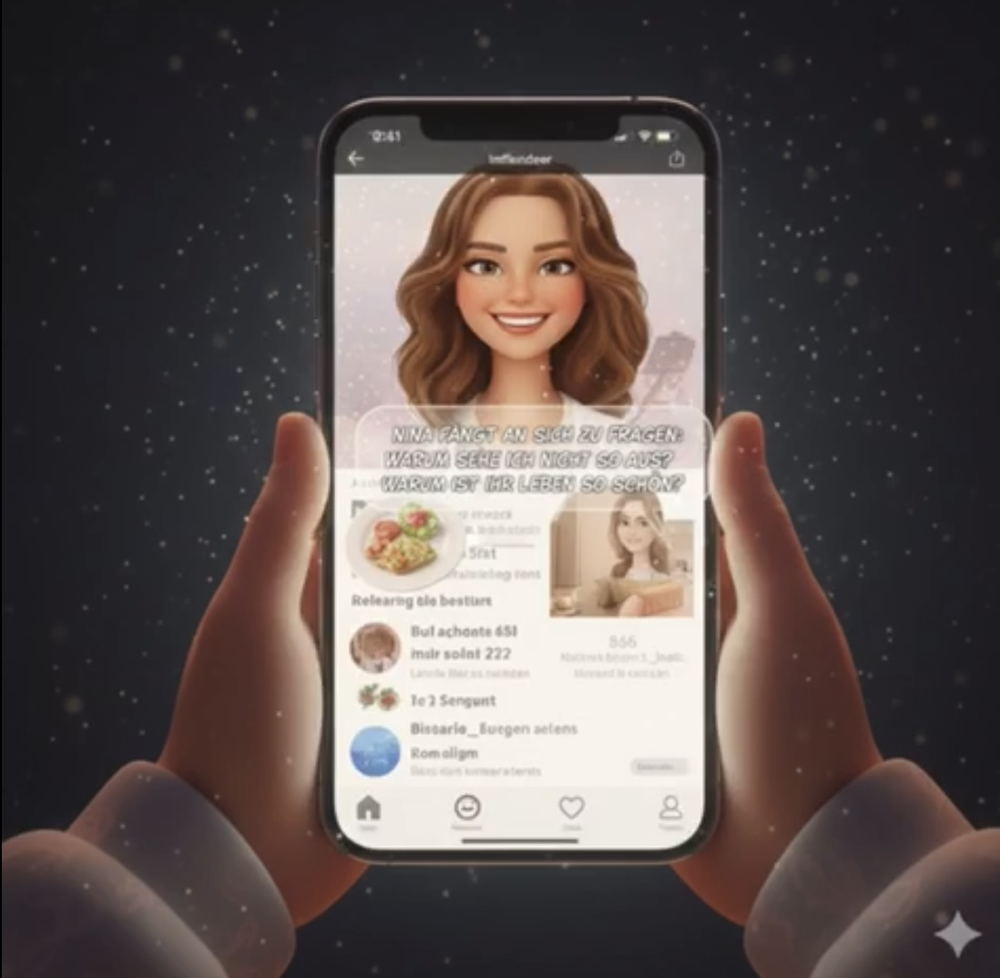
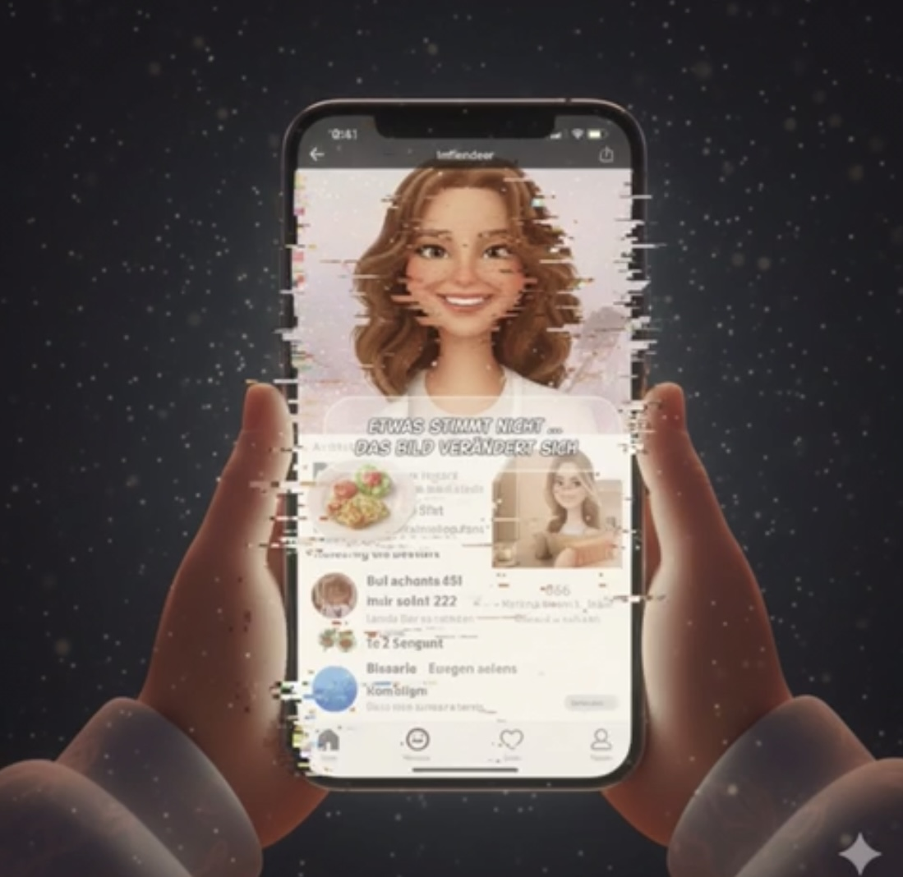
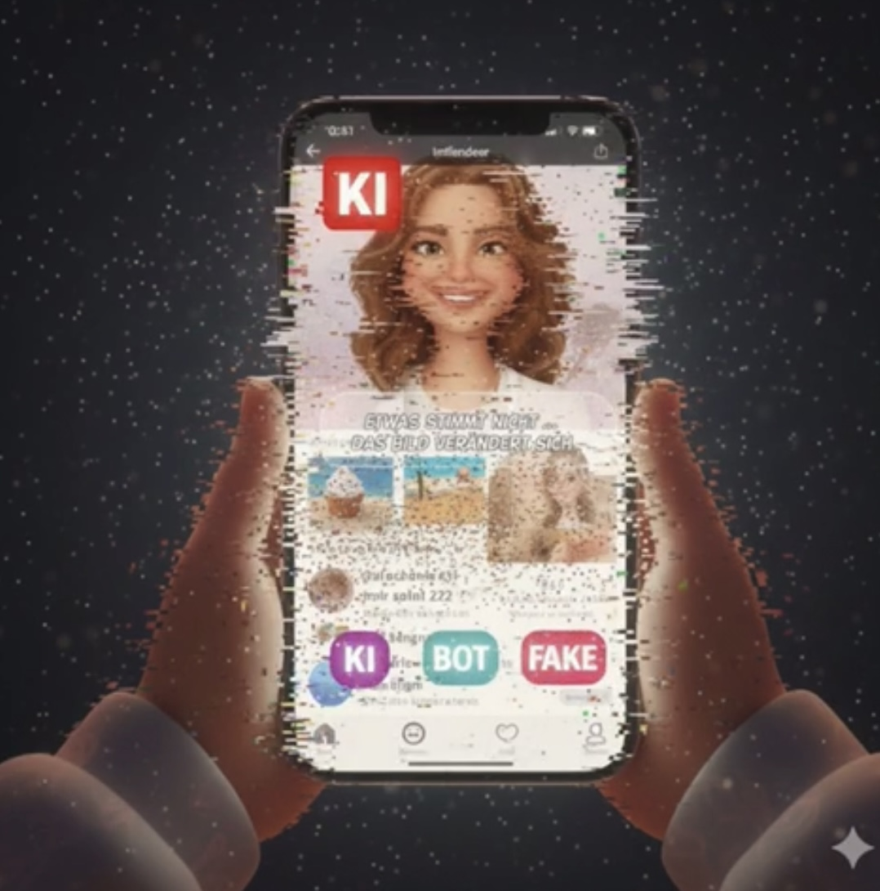
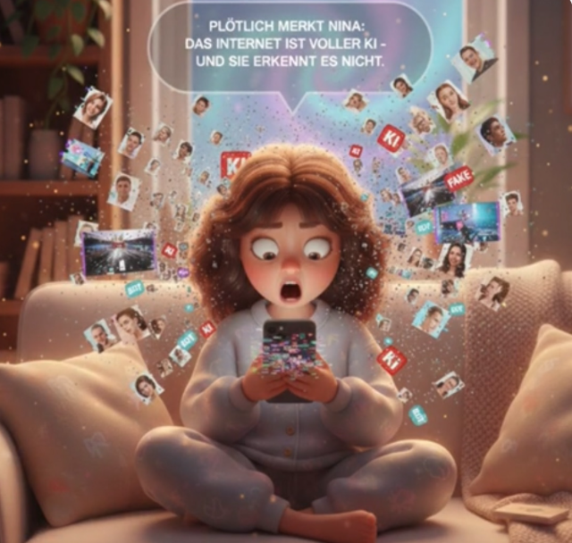
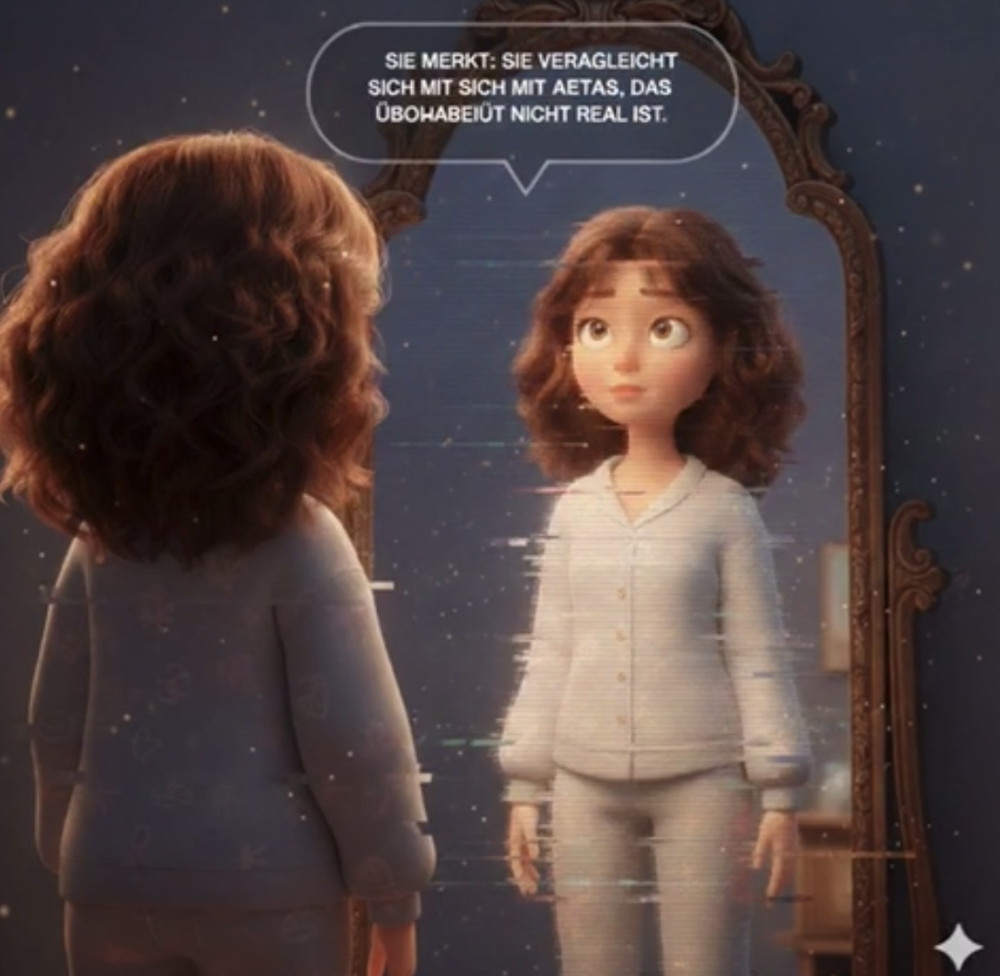
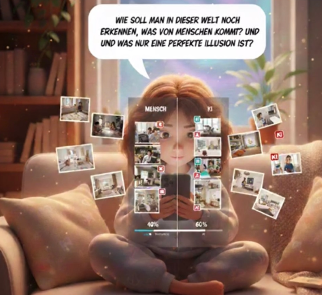
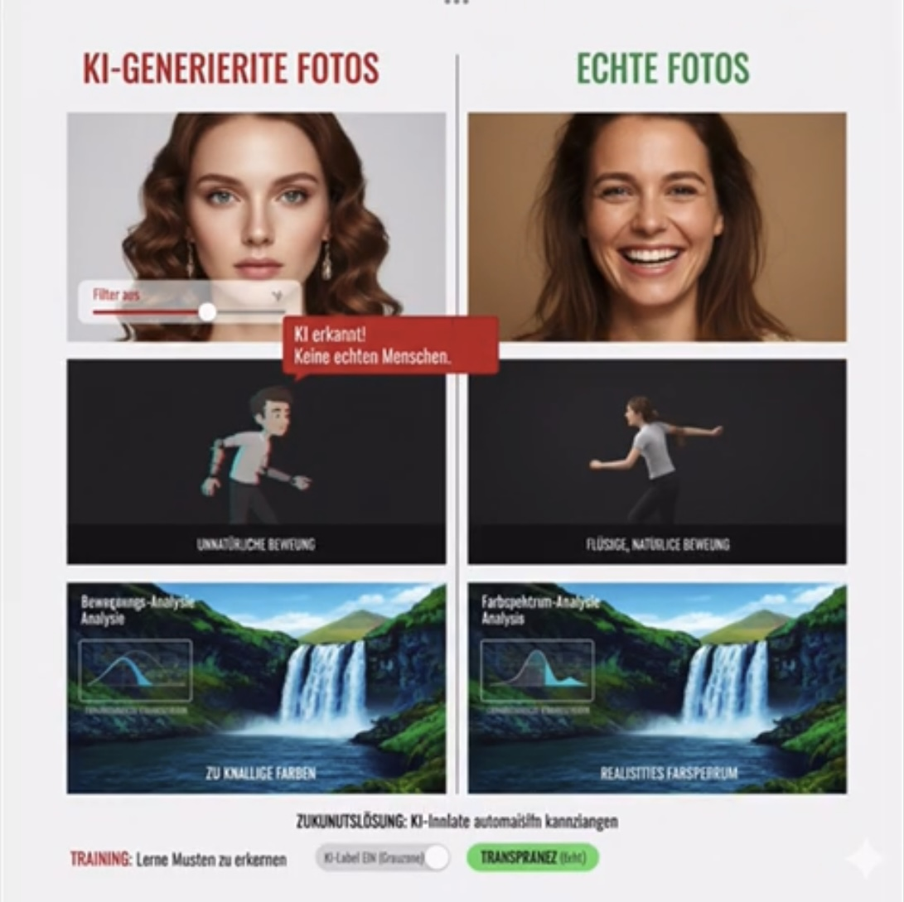
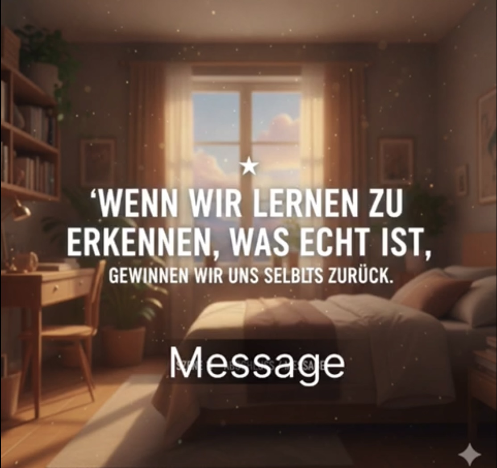

Lösung: Medienkompetenz

Nach dem Frühstück setzt sich Nina für einen Moment hin. Die Sonne fällt weich durchs Fenster, alles ist still. Sie nimmt ihr Handy in die Hand nur kurz, denkt sie. Ein paar Bilder, ein paar Gesichter, ein bisschen Scrollen. Es fühlt sich harmlos an. Wie eine Pause. Wie ein Moment nur für sie.

Alles sieht schön aus. Zu schön. Gesichter sind makellos, Körper perfekt inszeniert. Jeder Moment wirkt leicht, erfolgreich, glücklich. Nina scrollt weiter und merkt nicht, wie sich ihr Blick langsam verändert.

"Warum sehe ich nicht so aus? Warum ist ihr Leben so schön? Die Bilder fühlen sich real an.", fragt sich Nina verzweifelt.
.
Alles wirkt vertraut. Das Gesicht lächelt. Der Feed läuft weiter. Es sieht aus wie echte Nähe. Wie ein echtes Leben. Nina scrollt weiter. Ohne zu hinterfragen.

Nina scrollt weiter. Doch plötzlich bleibt ihr Blick hängen. Etwas passt nicht. Das Lächeln wirkt zu glatt. Die Bewegungen zu perfekt. Die Bilder sehen echt aus, aber sie fühlen sich nicht mehr so an. Dann passiert etwas.Linien verschieben sich. Das Lächeln zerfällt. Für einen Moment wird sichtbar, dass hier etwas konstruiert ist. Nina hält inne. etzt sieht sie es. Der Glitch!

Der Feed bricht auf. Gesichter flackern. Profile zerfallen in Fragmente.,Nina erkennt: Viele dieser Menschen existieren nicht. Keine Vergangenheit. Keine Gefühle. Kein echtes Leben.
Die Perfektion war nie real aber ihre Wirkung war es

Etwas stimmt nicht. Nina kann es nicht benennen, aber ihr Blick bleibt hängen. Das Bild wirkt instabil. Gesichter tauchen auf, verschwinden wieder. Kleine Brüche. Verschobene Linien. Es ist nur ein Moment. Fast unsichtbar.
Doch plötzlich weiß Nina: Das hier ist nicht echt. Nicht alles, was wie ein Mensch aussieht, ist auch einer.

Nina schaut weg vom Display. Ihr Blick fällt auf ihr Spiegelbild. Ungeschönt. Ungefiltert. Zum ersten Mal versteht sie: Sie vergleicht sich mit etwas, das nie real war.

Wenn Bilder perfekter sind als das echte Leben woran erkennt man dann noch Wahrheit? Nina merkt, dass die Grenze zwischen Mensch und Maschine kaum noch sichtbar ist.
„Wie soll man erkennen, was von Menschen kommt und was nur eine perfekte Illusion ist?“
Nina beginnt genauer hinzusehen. Sie achtet auf Details. Hinterfragt Quellen. Nicht jedes Bild ist Wahrheit. Nicht jede Emotion ist echt. Wissen wird zu ihrem Werkzeug.
Nina lernt, KI-Inhalte zu erkennen und echte Stimmen wiederzufinden.

Zum ersten Mal schaut sie nicht nur hin sie vergleicht. Links: perfekte Haut, symmetrische Züge, jede Bewegung berechnet. Rechts: kleine Falten, echte Mimik, ein unperfektes Lächeln. Plötzlich erkennt sie Muster. Was vorher wie Schönheit wirkte, fühlt sich jetzt leer an.

Mit jedem bewussten Blick verliert die Illusion an Macht. Nina entscheidet selbst, was sie glaubt und was sie loslässt.
„Social Media zeigt nicht die Wahrheit. KI zeigt Möglichkeiten aber keine echten Menschen.“, sagt Nina.
Mit Nina lächelt ihrem Spiegelbild zu. Nicht perfekt, aber echt und das reicht.
„Echt ist genug.“

Wenn wir lernen zu erkennen, was echt ist, gewinnen wir uns selbst zurück.
Nun wird die Nutzer/-in selbst Teil der Geschichte und muss entscheiden, was für sie echt hält.
Triff eine Entscheidung – ohne Punkte, ohne Druck. Nur Wahrnehmung.
Nina hat gelernt, genauer hinzusehen.
Und du?
Nimm dir 10 Sekunden – ohne zu scrollen.
Beantworte es nur für dich.
Tipp: Klick eine Frage an – dann erscheint eine kleine Reflexion.
Wenn alles perfekt aussieht,
wird Echtheit leise.
Was bedeutet „echt“ für dich?